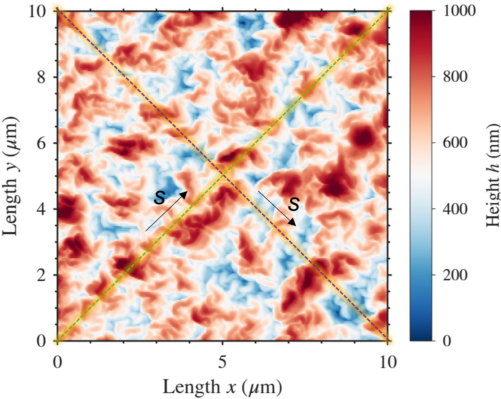

From AFM Topography to Lubricant-Depletion Dynamics
Lubricant-infused surfaces derive their functionality from a liquid retained within a textured solid structure. Under sustained flow, however, the applied shear can redistribute or remove this lubricant, progressively changing the effective interface and reducing surface performance. I developed a geometry-resolved computational workflow to investigate these depletion mechanisms using the actual topography of manufactured surfaces.


Atomic force microscopy height maps are processed and converted into three-dimensional computational geometries. Unlike idealised periodic textures, these reconstructions preserve the measured distribution of wrinkles, peaks, valleys and local geometric variations produced during fabrication. The resulting geometries are discretised with local refinement at the solid-liquid and liquid-liquid interfaces, where the largest velocity and stress gradients occur. The simulations represent the near-wall region of an externally turbulent flow. Rather than resolving the complete turbulent domain, I apply the equivalent wall shear stress to a smaller two-phase computational domain located within the viscous sublayer. Flow within this local domain is treated as laminar, while the water-lubricant interface is explicitly resolved. This approach concentrates the computational effort on the mechanisms governing lubricant displacement while retaining the physically relevant forcing imposed by the larger flow.
The simulations quantify lubricant redistribution, interfacial deformation, local velocity and stress fields, depletion pathways and retained lubricant volume. They reveal how measured surface architecture influences lubricant shielding, exposure to shear, interfacial displacement and the initiation of local depletion. The high-resolution calculations were executed in parallel using OpenFOAM on Gadi at the National Computational Infrastructure. Gadi provides national-scale high-performance computing for simulations that require large meshes, parallel processing and substantial data handling beyond conventional desktop resources.
Geometry-resolved lubricant-flow modelling
AFM height maps were converted into three-dimensional computational geometries that preserve the measured architecture of the manufactured surface. The reconstructed domains were discretised with local refinement near the solid texture and deformable water-lubricant interface. The model represents the viscous sublayer beneath an externally turbulent flow. The equivalent turbulent wall shear is imposed on the upper boundary, while the local two-phase motion is solved as laminar flow. This concentrates the calculation on lubricant redistribution and depletion without requiring simulation of the complete turbulent flow field. Parallel OpenFOAM calculations on Gadi resolve the evolving interface, retained lubricant volume, local velocity and shear fields, and depletion pathways across the complex surface. The results connect manufacturing-derived topography with lubricant retention, performance and durability.
Acknowledgement
Simulations were performed using OpenFOAM on Gadi, operated by the National Computational Infrastructure. The national-scale computing capability enabled parallel, geometry-resolved simulations using meshes derived from experimental AFM measurements.
Publications
The manuscript is in advanced preparation for submission to Chemical Engineering Journal.